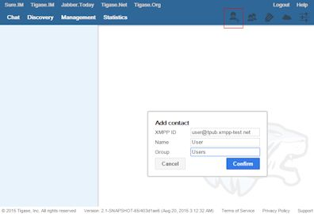
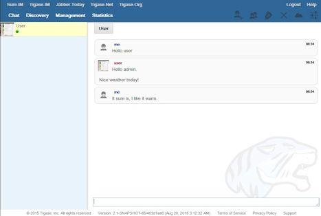
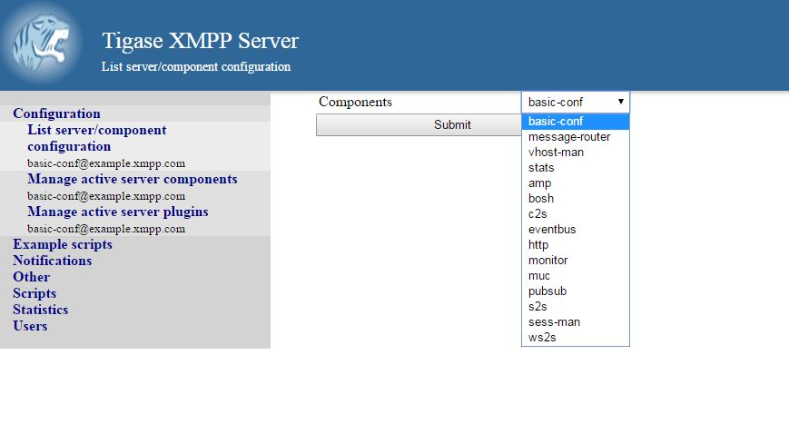
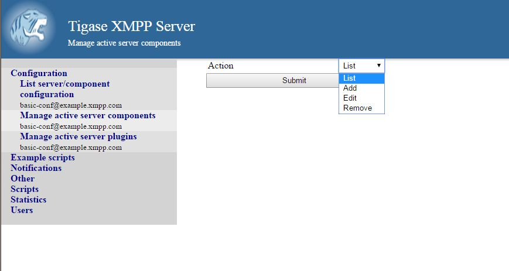
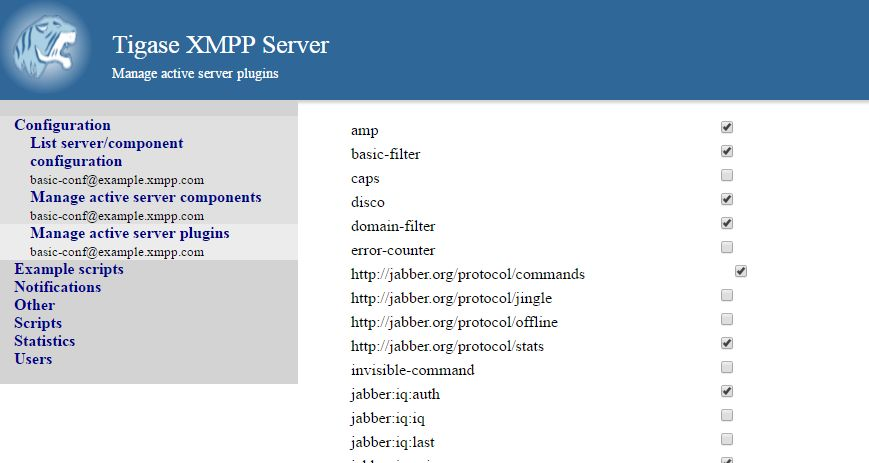

Welcome to the Tigase HTTP API users guide. The HTTP API allows you to manage, configure, chat, and send commands to Tigase server using a simple, easy-to-use interface right from your browser! We will guide you through setup, running, and going through some features of the HTTP API.
The HTTP API Requires Tigase version v5.0.3 but we recommend using the latest version of Tigase which will give you the easiest setup and functionality. Current versions of Tigase include most of the required files needed to run the API, however you will need to add one more library: servlet-api-3.1.jar which is available Here. Place that file in your /jars directory and you’re all setup and good to go.
Please note, earlier versions of Tigase installer may have not included another required file: javax.servlet-api.jar
This file is included in the archive distributions, and may be extracted to the /jars directory from there.
For older versions of the API, please see the Tigase HTTP API Wiki.
Once all the requirements in place, all you need to do is add the following lines to Tigase’s init.properties file:
--comp-name-3=http --comp-class-3=tigase.http.HttpMessageReceiver
Note that the class and name number is not important, so long as you don’t have anything else with the same number.
With this default configuration Tigase will attempt to start an http server at port 8080 and run the default modules such as RestModule which will add context for the REST API in /rest path. RestModule will also load all groovy scripts located in scripts/rest/xxx directories and it will bind it to proper action for the /rest/xxx/ paths. More than one directory can be used, think of xxx as a wildcard.
The HTTP component has a variety of configuration options, lets see them in detail here
Please note, for settings mentioning {compname} replace them with the exact text found as --comp-name, which may be http, rest, or something you have set custom in init.properties.
- {compname}/http/ports[i]=8088,8096
- Sets a comma separated list of ports on which the HTTP server listens for connections. 8080 is set by default.
- {compname}/2222/socket=ssl
- Sets the port you wish the HTTP server to listen to for HTTPS connections to 2222
- {compname}/4096/domain=example.com
- Sets 4096 as the port number you want to listen to HTTPS connections AND set the domain name of the SSL certificate from Tigase XMPP server certificate store to be used.
- {compname}/server-class=
Sets the name of the class used to manage the HTTP server. The following names may be used
- tigase.http.jetty.JettyStandaloneHttpServer - starts standalone Jetty HTTP Server instance (requires Tigase HTTP API - Jetty HTTP Server)
- tigase.http.jetty.JettyOSGiHttpServer - uses Jetty HTTP Server instance available as OSGi service (may be used only in OSGi envoirment) (requires Tigase HTTP API - Jetty HTTP Server)
- tigase.http.java.JavaStandaloneHttpServer - uses HttpServer provided by Java JDK to start standalone HTTP server (may not work on JDK from every JDK provider)
- {compname}/http/port
- An older version of the /ports[i] setting, it is still supported, but expect to be phased out.
- {compname}/setup/admin-credentials
- Sets a user and password combination that can access the web installer setup pages. By default administrator JIDs listed in --admins property are granted access, however you may specifiy a specific user and password to give access in addition to those JIDs. Format is [username:password] So for example, http/setup/admin-credentials=admin:password Note that this stores the information in plaintext on init.properties file, and this is an optional setting.
Tigase HTTP API component provides functionalities as modules which may be enabled or disabled and configured separately. Common settings for modules which can be passed in component properties in following format component_name/module_id/module_setting:
- active[B]= Values true/false to enable or disable module
- context-path= Path of HTTP context under which module should be available
- vhosts[s]= Comma separated list of virtual hosts under which the module should be availble. If this setting is not set, the HTTP module will be available for all virtual hosts.
With those ideas in mind, lets look at the available modules for the HTTP API.
This module provides support for the REST API. enable it by using this line in the init.properties file:
http/RestModule/active[B]=true
Assuming that comp-name for the class is http
- rest-scripts-dir=
- Path to directory containing scripts processing REST requests. By default this directory is scripts/rest
- api-keys[s]=
- Comma separated list of strings which would be possible to use as keys to pass api-key parameter to request an authorization to execute. If nothing is passed, then no request will be allowed. To allow any request, this property needs to be set to open_access.
dns-webservice module provides support for resolution of DNS names using the HTTP protocol. This might be useful for web applications that need to resolve DNS address to a specific IP. For example, discover IP and port of WebSocket service to use to connect to XMPP server.
To activate this module, use the following line;
http/dns-webservice/active[B]=true
Assuming that comp-name for the class is http
To begin using the HTTP API, point a browser to the following url http://your.server.domain:8080/ui/ and you will be presented with the following image to login with.
Use your admin-level XMPP id and it’s password to login. Please use bare JID for logins.
NOTE: Normal users can login here as well to use chat and basic functions, but they will not have admin privileges as shown in this guide
Chat is the first window that you will see after logging in. It’s quite bare here since there is no roster to speak of. If you had a roster, users would be shown. Lets add a user. Click the user add icon, and then fill in the fields below.

Once both users have added and authorized each other’s roster listing, the users and groups will be shown on the left, with the right side being used for chat functionality.

The Discovery tab encapsulates the service discovery function of XMPP servers, and will provide a list of available services. Clicking on the service will give you options for executing commands, checking settings, MUC rooms and more.
The Management tab is your administration and settings tool for the XMPP server. Here you can change settings, add and remove users, send server-wide notifications, write and execute scripts, and even obtain server statistics at a glance.
NOTE: some changes to settings may be instant, and others require a server restart
Scripts in the HTTP API component are used for processing all of requests.
To add a new action to HTTP API component you need to create a script in Groovy in which there is an implementation of class extending tigase.http.rest.Handler class. The URI of the script will be created from the location of script in scripts folder. For example, if TestHandler script with regular a expression will be set to /test and will be placed in scripts/rest/tested, the handler will be called for following URI /rest/tested/test.
If you are extending classes, you will need to set the following properties:
- regex
regular expression which is used to match request URI and parse parameters embedded in URI, example below:
/\/([^@\/]+)@([^@\/]+)/
- requiredRole
- Role of the user required to be able to access this URI. Available values: null, "user", "admin". If requiredRole is not null, authentication will be required.
- isAsync
- If set to true, it will be possible to wait for results, perhaps waiting for an IQ stanza to send results.
Extended class should also set closures for one or more of the following properties: execGet, execPut, execPost, and execDelete depending on which HTTP action or actions you need to support for the following URI. Each closure has dynamic arguments lists. Below is a list of arguments passed to closure which describes how and when the list of arguments change.
- service: Implementation of Service interface, used to access database or send/recieve XMPP stanzas.
- callback: Closure which needs to be called to return data. Accepts only one argument of type String,byte[],Map. If data is type of Map it will be encoded to JSON or XML depending on 'Content-Type' header.
- user: Will be passed only if requiredRole is not null. In other cases this argument will not be in arguments list!
- content: Parsed content of the request. Will not be in arguments list if Content-Length of request is empty. If Content-Type is of XML or JSON type, type returned as Map. Otherwise it will be an instance of HttpServletRequest.
- x: Additional arguments passed to callback are groups from regular expression matching URI. Groups are not passed as list, but are added to a list of arguments as next arguments.
If the property for corresponding HTTP action is not set, the component will return a 404 HTTP error.
This component covers both REST API as well as basic HTTP component configuration. REST stands for REpresentational State Transfer which is a stateless communication method that in our case passes commands using HTTP GET, PUT, POST, and DELETE commands to resources within the Tigase server. Although REST uses HTTP to receive commands, REST itself is not intended for use in a browser.
Tigase’s REST component requires the following in classpath
- servlet-api-3.1.jar
If you have installed Tigase v7.1.0 or later, the jar is already installed. If you are using an older version of Tigase, you may download the file from this link. Once this is installed, you will also need to add the following lines in your init.properties file to enable the HTTP component.
--comp-name-4=http --comp-class-4=tigase.http.HttpMessageReceiver
In this default configuration, Tigase will try to start a standalone Jetty HTTP server at port 8080 and start up the default modules, including RestModule which will add context for REST API in the /rest path. RestModule will also load all groovy scripts located in scripts/rest/* directories and will bind them to proper actions for the /rest/* paths.
NOTE: Scripts that handle HTTP requests are available in the component repository in src/scriopts/groovy/tigase/rest/ directory.
Here are some additional properties for the HttpMessageReceiver component that can be set in the init.properties file.
- {compname}/http/ports[i]= - Sets a comma separated list of ports on which the HTTP server will listen for connections. Default is 8080.
- {compname}/*********/socket=ssl - Sets the port for SSL connections, replace # with the port number of your choice.
- {compname}/*********/domain=example.com - This sets the domain name of the SSL certificate from Tigase XMPP certificate store, also sets the port to # to listen for HTTPS connections.
{compname}/server-class= - Sets the name of the class used to manage the HTTP server. Currently there are the following options:
- tigase.http.JettyStandaloneHttpServer - Starts standalone Jetty HTTP Server instance (requires Tigase HTTP API - Jetty HTTP Server)
- tigase.http.jetty.JettyOSGIHttpServer - Uses Jetty HTTP Server instance available as OSGi service (may be used only in OSGi envoirment) (require Tigase HTTP API - Jetty HTTP Server)
- tigase.http.java.JavaStandaloneHttpServer - Uses HttpServer provided by Java JDK to start standalone HTTP server (may not work on JDK from every JDK provider).
- {compname}/http/threads= - Sets the number of threads available for HTTP component. Default is 4.
- {compname}/http/request-timeout= - Sets the timeout time in ms for threads to close on inactive connections. Default is 60 seconds.
Tigase’s REST Component comes with two modules that can be enabled, disabled, and configured separately. Common settings for modules for component properties are used in the following format: component_name/module_id/module_setting/ the following settings are available for both listed modules:
- active[B] - Boolean values true/false to enable or disable the module.
- context-path - Path of HTTP context under which the module should be available.
- vhosts[s] - Comma separated list of virtual hosts for which the module should be available. If not configured, the module will be available for all vhosts.
This is the Module that provides support for the REST API. Available properties:
- rest-scripts-dir - Provides ability to specify path to scripts processing REST requests if you do not wish to use default (scripts/rest).
- api-keys[s] - Comma separated list of strings which would be possible to use as keys to pass api-key parameter to request authorization for request execution. If nothing is passed, then no request will be allowed. To allow any request, this property needs to be set using the following:
http/rest/api-keys[s]=open_access
You may set api-keys to any string you wish, however, when you make requests of the HTTP API service, the included API key must match EXACTLY. Keep the API key to ASCII characters to maintain compatibility. For example, if you were to set the following API key:
http/rest/api-key[s]=a7D2dm3lps138w
Requests made to the HTTP service must conclude with the same key: http://localhost:8080/rest/adhoc/sess-man@domain.com?api-key=a7D2dm3lps138w
Here are some examples using the HTTP API using available scripts.
To retrieve a list of available commands, REST needs to use the GET method from the following resource: /rest/adhoc/sess-man@domain.com. This provides a list of available adhoc commands from the sess-man@domain.com resource. This can be change to any bare JID that you wish to get commands from so it can be a MUC room, monitor component, or in this case, the Session manager. With the server running, lets connect to the address http://localhost:8080/rest/ and the following resource /adhoc/sess-man@domain.com which will retrieve a list of all ad-hoc commands available at sess-man@domain.com. This particular action is protected by authentication using HTTP basic authentication so valid credentials are necessary. User credentials are available in the Tigase’s user database installation, so use the bare JID and password of an admin-authorized account to conduct this activity. The result will be an XML format output of available commands, similar to an IQ stanza, below an example of that result.
<items>
<item>
<jid>sess-man@domain.com</jid>
<node>http://jabber.org/protocol/admin#get-active-users</node>
<name>Get list of active users</name>
</item>
<item>
<jid>sess-man@domain.com</jid>
<node>del-script</node>
<name>Remove command script</name>
</item>
<item>
<jid>sess-man@domain.com</jid>
<node>add-script</node>
<name>New command script</name>
</item>
</items>There is also the ability to return a JSON formatted result. To achieve this, you need to pass Content-Type: application/json to the HTTP header of the request, or add the type parameter and set it to application/json setting. An example of a JSON result is below.
{
"items": [
{
"jid": "sess-man@domain.com",
"node": "http://jabber.org/protocol/admin#get-active-users",
"name": "Get list of active users"
},
{
"jid": "sess-man@domain.com",
"node": "del-script",
"name": "Remove command script"
},
{
"jid": "sess-man@domain.com",
"node": "add-script",
"name": "New command script"
}
]
}Again, either of these methods can be used on any component with available ad-hoc commands. Feel free to experiment and see what options are available for each component.
Once you have found a command you wish to use, you can send that command using the HTTP POST method. In this example, lets request a list of active users as seen in the previous section. NOTE: like the previous example, these commands require basic HTTP authentication.
The following command is sent to http://localhost:8080/rest/adhoc/sess-man@domain.com
<command>
<node>http://jabber.org/protocol/admin#get-active-users</node>
<fields>
<item>
<var>domainjid</var>
<value>domain.com</value>
</item>
<item>
<var>max_items</var>
<value>25</value>
</item>
</fields>
</command>This particular command reqiures the three fields <node>, domainjid, and max_items. These three values are the node for the command, as returned in available commands, the domain results are to be returned from, and the maximum number of results. Keep in mind that Content-type: text/xml must be passed to the HTTP header to get an XML result. Not doing so may yield errors or incomprehensible results. The result for this command will look like this:
<command>
<jid>sess-man@domain.com</jid>
<node>http://jabber.org/protocol/admin#get-active-users</node>
<fields>
<item>
<var>Users: 3</var>
<label>text-multi</label>
<value>admin@domain.com</value>
<value>user1@domain.com</value>
<value>morbo@domain.com</value>
</item>
</fields>
</command>Similar results can be sent and received using JSON in a similar fashion. Again, be sure to set ContentType: application/json in the header or default settings.
{
"command" : {
"node" : "http://jabber.org/protocol/admin#get-active-users",
"fields" : [
{
"var" : "domainjid",
"value" : "subdomain.domain.com"
},
{
"var" : "max_items",
"value" : "25"
}
]
}
}The results will look quite similar to the XML results:
{
"command": {
"jid": "sess-man@domain.com",
"node": "http://jabber.org/protocol/admin#get-active-users",
"fields": [
{
"var": "Users: 2",
"label": "text-multi",
"value": [
"minion1@subdomain.domain.com",
"overadmin@subdomain.domain.com"
]
}
]
}
}XMPP messages or any other XMPP stanza can be sent using this API by sending HTTP POST request on http://localhost:8080/rest/stream/api-key=API_KEY with a serialized XMPP stanza as content, where API_KEY is the API key specified in the init.properties file. Each request needs to be authorized by sending a valid administrator JID and password as a user/password of BASIC HTTP authorization method. The content of the HTTP request should be encoded in UTF-8 and Content-Type should be set to application/xml.
If no from attribute is set in the stanza, the HTTP API component will supplant it’s JID instead, however if one is set it will be preserved. However, in iq stanzas, if no from attribute is set the HTTP response content will be sent back as a response. Successful requests will return a HTTP response code of 200.
Examples: Any of these examples must be sent as an HTTP POST request to /rest/stream/?api-key=API_KEY of the HTTP API component.
<message xmlns="jabber:client" type="chat" to="test@example.com/resource-1">
<body>Example message 1</body>
</message><message xmlns="jabber:client" type="chat" to="test@example.com">
<body>Example message 1</body>
</message>You can also send messages, or really any XMPP stanza to users and components through REST API. Sending XMPP messages or stanzas using HTTP is realized as a groovy script bundled in the installation package from v7.0.2. If you want to be sure your current install supports this feature, check for the presence of Stream.groovy file in the scripts/rest/stream/ directory.
As in other examples, be sure that you have the following line in your init.properties:
http/rest/api-keys[s]=test_key
You may also opt to have open_access set to disable API key parameter.
Using the HTTP POST method, XMPP stanzas can be sent using the built in HTTP API. In a local installation, the request can be sent to http://localhost:8080/rest/stream/?api-key=API_KEY with a seralized XMPP stanza as content, where API_KEY is the API key for HTTP API which is set in etc/init.properties as rest/api-keys[s]. In the case we laid out, it would be test_key. Because XMPP uses XML for formatting, all content in these requests MUST be encoded in UTF-8 and Content-type must be set to application/xml. Lets take a look at some examples.
In all examples the data is sent as an HTTP POST request to /rest/stream/?api-key=test-key.
<message xmlns="jabber:client" type="chat" to="test@example.com/resource-1">
<body>Example message 1</body>
</message>Once this message is sent, the Groovy script adds the remaining information automatically, and the following is what is receieved by test@example.com/resource-1.
<message xmlns="jabber:client" type="chat" from:"http@example.com" to="test@example.com/resource-1">
<body>Example message 1</body>
</message>As you can see, the HTTP component is automatically populated as the sender.
<message xmlns="jabber:client" type="chat" to="test@example.com">
<body>Example message 1</body>
</message>The syntax and formatting is the same, with the recepiant messaging being exactly the same.
<message xmlns="jabber:client" type="chat" from:"http@example.com" to="test@example.com/resource-1">
<body>Example message 1</body>
</message>You may specify any JID that is registered in the server to send the stanza, ones that use a name that is not registered will return an error.
<message xmlns="jabber:client" type="chat" from="sender@example.com" to="test@example.com/resource-1">
<body>Example message 1</body>
</message>Ends with the result being somewhat customized.
<message xmlns="jabber:client" type="chat" from:"sender@example.com" to="test@example.com/resource-1">
<body>Example message 1</body>
</message>There are different formats for avatar retrieval depending on how they are stored, see below for the resources for each type of avatar.
- /rest/avatar/user@domain - which returns first avatar found (PEP, VCard4 or VCardTemp in this order)
- /rest/avatar/user@domain/avatar - which returns PEP avatar
- /rest/avatar/user@domain/vcard4 - which returns avatar from VCard4
- /rest/avatar/user@domain/vcard-temp - which returns avatar from VCardTemp
The HTTP API component has settings that allow you to specify who is allowed to use the HTTP API interface, keeping unauthorized users from accessing the feature. This feature is implemented using a Groovy admin ad-hoc stript for the Session Manager component. As a result of this method, it will be avaiulable to execution using the default GTTP API componene capability to execute the script. The actual work of filtering, however, will be conducted by the DomainFilter plugin.
GetUserInfo command has been expanded to obtain user login and logout times in addition to standard information. To obtain the information, send a POST request to http://xmpp.domain.net:8080/rest/adhoc/sess-man@xmpp.domain.net?api-key=test-api-key with the following:
<command>
<node>get-user-info</node>
<fields>
<item>
<var>accountjid</var>
<value>user@xmpp.domain.net</value>
</item>
<item>
<var>Show connected resources in table</var>
<value>true</value>
</item>
</fields>
</command>The HTTP API privacy scipt is loaded automatically. DomainFilter is a default plugin loaded by Tigase on startup. This means there is very little you need to do to have this running. Again, you may define a custom API key to limit access using the following line in init.properties
http/rest/api-keys[s]=test_key
Setting privacy rules can be done by sending a POST request to the session manager using this address: http://localhost:8080/rest/sess-man@domain.com?api-key=test_key
<command>
<node>user-domain-perm</node>
<fields>
<item>
<var>jid</var>
<value>user@domain.com</value>
</item>
<item>
<var>fiteringPolicy</var>
<value>CUSTOM</value>
</item>
<item>
<var>filteringList</var>
<value>
1|allow|self;
2|allow|jid|admin@test2.com;
3|allow|jid|pubsub@test.com;
4|deny|all;
</value>
</item>
</fields>
</command>Here all parameters are passed to be excuted by ad-hot command. Using the user-domain-perm node we were able to add jids to a CUSTOM filter. Here is a brief breakdown:
- jid denotes which JID the settings will be applied too.
- filteringPolicy - This uses a CUSTOM type list that allows for multi-item list of custom processing rules.
- filteringLise - This is a multi-item list, semi-colon delimited, where each line denotes one item with a rule in this format: +order_number|policy|UID_type[|UID]:
- order_number can be any integer, as long as no numbers repeat.
- policy can either allow or deny.
- UID_type is the User ID Type, can be jid, domain, or all.
- UID is the user JID affected. If UID_type is set to all then this will be ignored.
These ad-hoc commands replicate settings found in Domain Based Packet Filtering in the admin guide. They may also be influenced by the --domain-filter-policy property of init.properties.
As you can see from the above commands, Tigase uses pre-defined scripts for processing of all requests in HTTP API. Although the list may be small for now, this does mean with a little bit of Groovy scripting, you can create your own scripts to interpret REST commands and send them to the server!
All scripts for this purpose will be an implementation of class extending tigase.http.rest.Handler class. The URI of the scripts will be inside the scripts folder. For example, if the script uses TestHandler with a regular expression set to /test and is placed inside the scripts/rest/ the handler will be called with this URI: scripts/rest/test/.
When extending classes, you will need to set the following listed properties. regex:: Regular expression which is used to match request URI and parse parameters embedded in URI, for example:
----- /\/([^@\/]+)@([^@\/]+)/ -----
- requiredRole
- Role of user required to be able to access this URI. Available values are null, user, and admin. Authentication for the script will be required if requiredRole is not null.
- isAsync
- If set to true, it will be possible to wait for results pending the arrival of IQ stanzas for instance.
Extended class should also set for closures for one or more of the following properties: execGet, execPut, execPost, execDelete, depending on which HTTP action is needed to support the following URI. Each closure has a dynamic arguments list generated at runtime. Below is a list of arguments passed to closure which describe how and when the list of arguments change.
- service
- Implementation of service interface which is used to access database or send/receove XMPP stanzas.
- callback
- Callback closures needs to be called to return data. However they only accept one argument of type string,byte[],Map. If data is Map tupe, it will be encoded to JSON or XML depending on Content-Type header.
- user
- Is passed only if requiredRole is not null. Otherwise this argument will not be in the argument list.
- content
- Parsed content of the request. This will not be in the list of arguments if Content-Lengeth of request is empty. If Content-Type is set to XML or JSON the return result will be as Map, otherwise it will be an instance of HttpServletRequest.
- x
- Additional arguments passed to callback are groups from regular expression matching the URI. Groups are not passed as a list, but are added to the list of arguments and next arguments.
If a property for corresponding HTTP action is not set, the component will return an HTTP 404 error.
Lets have a look at a script that is included with the install package to get a better idea of how these scripts work. This script will GET a list of all registered account and output them according to an HTML file we will look at later.
import tigase.http.rest.Service
import tigase.xmpp.BareJID
/**
* Class implements ability to retrieve by service administrator list of registered accounts
* Handles requests for /rest/users/
*
* Example format of content of response:
* <users><items><item>user1@domain</item><item>user2@domain</item></items><count>2</count></users>
*/
class UsersHandler extends tigase.http.rest.Handler {
public UsersHandler() {
description = [
regex : "/",
GET : [ info:'Retrieve list of registered user jids',
description: """Request do not require any parameters and returns list of all registered user accounts on this server (for all vhosts).
Example response will look like this:
\${util.formatData([users:[items:['user1@example.com','user2@example.com','user1@example2.com'],count:3]])}
"""]
];
regex = /\//
requiredRole = "admin"
isAsync = false
execGet = { Service service, callback, jid ->
def users = service.getUserRepository().getUsers()
callback([users:[items:users, count:users.size()]]);
}
}
}As we can see, it’s a fairly short code. First it calls the rest service (required for all of the REST activity), and the BareJID handler. Next we extend out custom class to extend tigase.http.rest.Handler. Our author has provided a helpful description of the code to better describe it’s operation and expected result. The last section is the actual code that defines what will match our query, in this case anything, a requirement that an admin make the command, that the connection will terminate with results, and what commands will be passed.
The matching HTML, which will shape the output of the code is included here.
${ util.include('header', [title:'All users']) }
<table style="margin: auto;">
<tr>
<th>Avatar</th>
<th>User JID</th>
</tr>
<% result.users.items.each { user -> %>
<tr>
<td>
<img style="max-height: 50px; max-width: 50px;" src="${util.link("/avatar/" + user)}" />
</td>
<td>
<a href="${util.link("/user/"+user)}">${user}</a>
</td>
</tr>
<% } %>
</table>
${ util.include('footer') }This file builds a table using the user fields from the GET request. NOTE: Not all scripts need a matching HTML file, basic requests may not need special handling.
All PubSub Scripts are found within the scripts/rest/pubsub directory of Tigase’s installation directory. All examples in this section are prepared for a PubSub component available at pubsub@example.com. To use these examples for your installation, that JID needs to be replaced with with your pubsub JID.
All parameters passed in the content of HTTP request needs to be wrapped with <data/> tag at the root of the XML document. Returned results will be wrapped within the <result/> tag in the root of the XMl document.
HTTP URL: example.com/rest/pubsub/pubsub@example.com/create-node
Available HTTP methods:
GET
Method returns example content which contains all required and optional parameters that may be passed to the newly created node.
POST
Command requires fields node and pubsub#node_type to be filled with proper values for execution.
- node Field contains id of node to create
- owner Field may contain JID or JIDS which will be considered owner of the node. If this field is empty, server will use JID of HTTP API Component (rest@example.com)
pubsub#node_type Field should contain one of two types:
- leaf Node to items that will be published
- collection Node to nodes what will contain other nodes
Below is an example of creating a leaf type node with the owner set to admin@example.com.
<data>
<node>example</node>
<owner>admin@example.com</owner>
<pubsub prefix="true">
<node_type>leaf</node_type>
</pubsub>
</data>Server response:
<result>
<Note type="fixed">
<value>Operation successful</value>
</Note>
</result>HTTP URL: example.com/rest/pubsub/pubsub@example.com/delete-node
Available HTTP methods:
GET
Command returns example content which contains all required and operational parameters that may be passed.
POST
Command requires field node to be filled where node is the id of the node to delete.
Below is an example of removing a node with an id of example
<data> <node>example</node> </data>
Server response
<result>
<Note type="fixed">
<value>Operation successful</value>
</Note>
</result>HTTP URI: example.com/rest/pubsub/pubsub@example.com/subscribe-node
Available HTTP methods:
GET
Method returns example content which contains all required and optional parameters that may be passed.
POST
Command requires node and jid fields to be filled.
- node is the id of the node to subscribe too.
- jid is the JID or JIDS to be subscribed to the node.
Below is an example of the XML information passed between client and server with test1@example.com and test2@example.com subscribing to example node.
<data>
<node>example</node>
<jids>
<value>test1@example.com</value>
<value>test2@example.com</value>
</jids>
</data>Server response:
<result>
<Note type="fixed">
<value>Operation successful</value>
</Note>
</result>HTTP URI: example.com/rest/pubsub/pubsub@example.com/unsubscribe-node
Available HTTP methods:
GET
Method returns example content which contains all required and optional parameters that may be passed.
POST
Like the Subscribe to a node section, the command requires both the node and jid fields to be filled.
- node is the id of the node to unsubscribe from.
- jid is the JID or JIDS to be unsubscribed from the node.
Below is an example of the XML information passed between client and server with test1@example.com and test2@example.com unsubscribing to example node.
<data>
<node>example</node>
<jids>
<value>test@example.com</value>
<value>test2@example.com</value>
</jids>
</data>Server response:
<result>
<Note type="fixed">
<value>Operation successful</value>
</Note>
</result>HTTP URI: example.com/rest/pubsub/pubsub@example.com/publish-item
Available HTTP methods:
GET
Method returns example content which contains all required and optional parameters that may be passed.
POST
Command requires the node and entry fields to be filled. Available fields:
- node Field contains the id of the node to be published to.
- item-id Field to contain the id of the entry to publish.
- expire-at Field may contain a timestamp after which item should not be delivered to subscribed users. Timestamp should follow this pattern: YYYY-MM-DDhh:mm:ss with a trailing Z to indicate UTC time in a 24h format.
- entry Field should contain multi-line entry content which should be valid XML value for an item.
Below is an example exchange between client and server for publishing an item with id item-1 to node example .
<data>
<node>example</node>
<item-id>item-1</item-id>
<expire-at>2015-05-13T16:05:00+02:00</expire-at>
<entry>
<item-entry>
<title>Example 1</title>
<content>Example content</content>
</item-entry>
</entry>
</data>Server response:
<result>
<Note type="fixed">
<value>Operation successful</value>
</Note>
</result>HTTP URI: example.com/rest/pubsub/pubsub.example.com/list-nodes
Available HTTP methods
GET
This method returns list of available PubSub nodes for the domain passed as part of the URI (pubsub.example.com).
Below is an example exchange between client and server for listing all nodes, the result having test, node_54idf40037 and node_3ws5lz0037
<result> <title>List of available nodes</title> <nodes label="Nodes" type="text-multi"> <value>test</value> <value>node_54idf40037</value> <value>node_3ws5lz0037</value> </nodes> </result>
HTTP URI: example.com/rest/pubsub/pubsub.example.com/list-items
Available HTTP methods
GET
Method returns example content which contains all required and optional parameters that may be passed.
POST
This command requires the node field to be filled. The node field contains the ID of the node from which we want the list of published items.
Below is an example exchange between client and server asking for all items published in the example node.
<data> <node>example</node> </data>
Server Response
<result> <title>List of PubSub node items</title> <node label="Node" type="text-single"> <value>example</value> </node> <items label="Items" type="text-multi"> <value>item-1</value> <value>item-2</value> </items> </result>
Items item-1 and item-2 are the listed items.
HTTP URI: example.com/rest/pubsub/pubsub.example.com/retrieve-item
Available HTTP methods
GET
Method returns example content which contains all required and optional parameters that may be passed.
POST
Command requires that fields node and item-id are filled. Available Fields: - node The node the item is published to. - item-id The id of the item you wish to retrieve.
Example communication between client and server:
<data> <node>example</node> <item-id>item-1</item> </data>
Server response:
<result> <title>Retrive PubSub node item</title> <node label="Node" type="text-single"> <value>example</value> </node> <item-id label="Item ID" type="text-single"> <value>item-1</value> </item-id> <item label="Item" type="text-multi"> <value><item expire-at="2015-05-13T14:05:00Z" id="item-1"><item-entry> <title>Example 1</title> <content>Example content</content> </item-entry></item> </value> </item> </result>
Node that inside the item element, there is an XML encoded element, this will be retrieved without any decoding.
The Admin User Interface is an HTTP-based interface that sends REST commands to the server to update configurations, change settings, and retrieve statistics.
REST stands for REpresentational State Transfer which is a stateless communication method that in our case passes commands using HTTP GET, PUT, POST, and DELETE commands to resources within the Tigase server. Although REST uses HTTP to receive commands, REST itself is not intended for use in a browser. For more information, please see the REST API guide.
Allows you to list server components and their configurations, as well as manage server components and plugins.
List server/component configuration section covers all the component options including the basic-conf and will allow you to change each setting by changing the values in the field and clicking submit. All settings are listed by the component name in the dropdown menu either as default, or as defined by --component-name property.

Manage active server components allows you to do exactly that, but you can also add and disable components from this interface.

Here you can List, Add, Edit, and Remove components. - List provides a list of all running components, each with its name, info, and class. - Add provides an interface to add a class and a name for components. You will not be able to add invalid component names or classes. - Edit enables you to edit the specific properties of any running component. Even options for which there are no current values will be listed, you can consider this list a comprehensive list of settings and options for the current component. - Remove provides a way to remove running components.
Managing server plugins allows you to turn on or off plugins from this window VIA check-boxes. Note that the changes are made in real-time.

This is a list of script examples that can be run and do menial functions for each component. They may not have particular value themselves, but are present to be used as reference when writing custom scripts. Get list of available commands is one script, that is present for every component that is active on the server, and as its title implies, will provide a list of all commands for that component. Lastly, the two scripts from the Scripting section of this guide. Generally, there is not much needed to see in this section.
This section has one simple command: to be able to send a mass message to all logged in users. There are three types of messages that can be sent from this section: - normal Messages will show as a pop-up in most clients. - headline Certain clients will take headline messages and insert them into MUC or chats between users, otherwise it will create a pop-up like normal messages. - chat Chat messages will open up a chat dialog with users.
This section contains a considerable list of options and settings affecting server functions.
This allows you to set a log file to track a specific user. Set the bare or full JID of the user you want to log, and a name of the files you wish the log to be written to. The files will be written in the root Tigase directory unless you give a directory like logs/filename. The log files will be named with a .0 extension and will be named .1, .2, .3 and so on as each file reaches 10MB by default. filename.0 will always be the most recent. Logging will start once the command has been issued, and cease once the server restarts.
Here you can add SSL certificates from PEM files to specific virtual hosts. Although Tigase can generate its own self-signed certificates, this will override any default certificates. The certificates cannot contain a passphrase, or be encrypted. Be sure that the contents contain both the certificate and private key data. You also have the option to save the certificate to disk, making the change permanent.
This section allows you to create a custom function for the eventbus component. These scripts can have the server conduct certain operations if set criteria are met. You may write the script in either Groovy or EMCAscript. Please see the eventbus section for more details.
You can write scripts for Groovy or ECMAScript to add to monitor tasks here. This only adds the script to available scripts however, you will need to run it from another prompt. Note that these scripts may only work with the monitor component.
This section allows you to add monitor scripts in Groovy while using a delay setting which will delay the start of the script.
Depending on whether you have any external components loaded or not, this may show. This allows you to add additional external components to the running instance of Tigase.
This allows you to add new virtual hosts to the XMPP server. A breakdown of the fields is as follows:
- Domain name: the full domain name of the new vhost. Tigase will not add anything to this domain, so if it is ti be a subdomain of example.com, you will need to enter sub.domain.com.
- Enabled: Whether the domain is turned on or off.
- Anonymous enabled: Allow anonymous logins.
- In-band registration: Whether or not to allow users to register accounts upon login.
- TLS required: Require logins to the vhost to conduct a TLS handshake before opening streams.
- S2S secret: a server-generated code to differentiate traffic between servers, typically there is no need to enter your own, but you may if you need to get into low level code.
- Domain filter policy: Sets the filter policy for this domain, see This section for a description of the rules.
- Domain filter domains: a specific setting to restrict or control cross domain traffic.
- Max users: maximum users allowed to be registered to the server.
- Allowed C2S, BOSH, Websocket ports: Comma separated list of ports that this vhost will check for all of these services.
- Presence forward address: specific address where presence information is forwarded too. This may be handy if you are looking to use a single domain for presence processing and handling.
- Message forward address: Specific address where all messages will be sent too. This may be useful to you if you have a single server handling AMP or message storage and want to keep the load there.
- Other Parameters: Other settings you may wish to pass to the server, consider this a section for options after a command.
- Owner: The owner of the vhost who will also be considered an administrator.
- Administrators: comma separated list of JIDs who will be considered admins for the vhost.
- XEP-0136 Message Archiving Enabled: Whether to turn on or off this feature.
- XEP-0136 Required store method: If XEP-0136 is turned on, you may restrict the portion of message that is saved. This is required for any archiving, if null, any portion of the message may be stored.
- Client certificate required: Whether the client should submit a certificate to login.
- Client certificate CA: The Certificate Authority of the client certificate.
- XEP-0136 retention period: integer of number of days message archives will be set.
- Trusted JIDs: Comma separated list of JIDs who will be added to the trusted list, these are JIDS that may conduct commands, edit settings, or other secure work without needed secure logins.
- XEP-0136 retention type: Sets the type of data that retention period will use. May be User defined (custom number type), Unlimited, or Number of Days.
- XEP-0136 - store MUC messages: Whether or not to store MUC messages for archiving. Default is user, which allows users to individually set this setting, otherwise tue/false will override.
- see-other-host redirection enabled: in servers that have multiple clusters, this feature will help to automatically repopulate the cluster list if one goes down, however if this is unchecked, that list will not change and may attempt to send traffic to a down server.
- XEP-0136 Default store method: The default section of messages that will be stored in the archive.
Here you can restrict users to be able to communicate on specific domains, this works similar to the domain filtering policy using the same rule sets. For more details, see Domain Based Packet Filtering section for rule details and specifics. Note that the changes may be made to mutiple JIDs at the same time.
This section allows you to create a new node for the pubsub component. Here is a breakdown of the fields:
- The node to create: this is the name of the node that will be created.
- Owner JID: user JID who will be considered the owner of the node.
pubsub#node type: sets the type of node the the new node will be. Options include:
- leaf Node that can publish and be published too.
- collection A collection of other nodes.
- A friendly name for the node: Allows spaces and other characters to help differentiate it from other nodes.
- Whether to deliver payloads with event notifications: as it says, to publish events or not.
- Notify subscribers when the configuration changes: default is false
- Persist items to storage: whether or not to physically store items in the node.
- Max # of items to persist: Limit how many items are kept in the node archive.
- The collection with which the node is affiliated: If the node is to be in a collection, place that node name here.
Specify the subscriber model: Choose what type of subscriber model will be used for this node. Options include:
- authorize - Requires all subscriptions to be approved by the node owner before items will be published to the user. Also only subscribers may retrieve items.
- open - All users may subscribe and retrieve items from the node.
- presence - Typically used in an instant message environment. Provides a system under which users who are subscribed to the owner JID’s presence with a from or both subscription may subscribe from and retrieve items from the node.
- roster - This is also used in an instant message environments, Users who are both subscribed to the owners presence AND is placed in specific allowed groups by the roster are able to subscribe to the node and retrieve items from it.
- whitelist - Only explicitly allowed JIDs are allowed to subscribe and retrieve items from the node, this list is set by the owner/administrator.
Specify the Publisher model: Choose what type of publisher model will be used for this node. Options include:
- open - Any user may publish to this node.
- publishers - Only users listed as publishers may be able to publish.
- subscribers - Only subscribers may publish to this node.
When to send the last published item: This allows you to decide if and when the last published item to the node may be sent to newly subscribed users.
- never - Do not send the last published item.
- on_sub - Send the last published item when a user subscribes to the node.
- on_sub_and_presence - Send the last published item to the user after a subscription is made, and the user is available.
- The domains allowed to access this node: Comma separated list of domains for which users can access this node. By default is is blank, and there is no domain restriction.
- Whether to deliver items to available users only: Items will only be published to users with available status if this is selected.
- Whether to subscription expired when subscriber going offline: This will make all subscriptions to the node valid for a single session and will need to be re-subscribed upon reconnect.
- The XSL transformation which can be applied to payloads in order to generate an appropriate message body element: Since you want a properly formatted <body> element, you can add an XSL transformation here to address any payloads or extra elements to be properly formatted here.
- The URL of the XSL transformation which can be applied to payloads in order to generate an appropriate message body element: This would be the URL of the XSL Transform, e.g. http://www.w3.org/1999/XSL/Transform.
- Roster groups allowed to subscribe: a list of groups for whom users will be able to subscribe. If this is blank, no user restriction will be imposed.
- Notify subscribers when owner changes their subscription or affiliation state: This will have the node send a message in the case of an owner changing affiliation or subscription state.
- Allows get list of subscribers for each subscriber: Allows subscribers to produce a list of other subscribers to the node.
Whether to sort collection items by creation date or update time: options include
- byCreationDate - Items will be sorted by the creation date, i.e. when the item was made.
- byUpdateTime - Items will be sorted by the last update time, i.e. when the item was last edited/published/etc..
Here you may set the default configuration for any new pubsub node. These changes will be made for all future nodes, but will not affect currently active nodes.
This page allows admins to set the default configuration for any new MUC rooms that may be made on the server.
This removes a monitor task from the list of available monitor scripts. This action is not permanent as it will revert to inital settings on server restart.
Provides a space to remove a node from the server. It must be the full name of the node, and only one node can be removed at a time.
This page allows the logged in admin to delete all nodes from the associated vhost. This change is irreversible, be sure to read and check the box before submitting the command.
You can fix a users roster from this prompt. Fill out the bare JID of the user and the names you wish to add or remove from the roster. This will NOT edit a user’s roster, but rather compare client roster to database and fix any errors between them.
This does the same as the Fix User’s Roster, but can apply to users who may not be logged into the local vhost, but are logged into a clustered server.
As the title implies this gets a users' roster and displays it on screen. You can use a bare or full JID to get specific rosters.
Enables you to see the contents of any file in the tigase directory. By default you are in the root directory, if you wish to go into directory use the following format: logs/tigase.log.0
If you don’t want to type in the location of a configuration file, you can use this prompt to bring up the contents of either tigase.conf or init.properties.
Will output the current init.properties file, this includes any modifications made during the current server session.
This may be listed multiple times for different components, but this will do as the section suggest and list available commands for that particular component.
Here you can run a test with the pubsub component on any node to test functionality and proper settings for the node.
Will display any errors the server encounters in loading and running. Can be useful if you need to address any issues.
This space allows you to create a new command script that will work within the associated component. Note that under the hyperlinked title, there is a listing of muc.server.org or pubsub.server.org, use these to determine where the new command will operate.
This allows the setting of new custom OAuth credentials for the server, and you can also require the use of OAuth tokens for users when they login. This is a setting for the specific host you are logged into. If you are logged into xmpp1.domain.com, it will not affect settings for xmpp2.domain.com.
This allows a JID to be paired with a BOSH session before that user logs in, can reduce CPU use if you have a user that logs in via BOSH on a regular basis, or a web client that will regularly connect. You may also specify HOLD and WAIT integers to affect how BOSH operates with the associated JID.
This window allows you to not only test, but publish an item to the specified node. All fields must be filled in in order to avoid the server dropping an improperly formatted stanza.
This will force Tigase to rebuild databases for the pubsub component, this may be useful for pubsub subscribers who continue to get pushed events after they unsubscribe.
This will reload any vhosts that the server is running. This may be useful if one is disconnected or broken during runtime.
This will remove a running vhost from the server, you will be presented with a list to pick from.
Like new command script, take a look at the subheading to determine which component you want to remove the script from. Once there, select the command you wish to remove from the server. If remove from disk is selected, then the change will be permanent. Otherwise, the command will be removed until the next server restart.
Select from a list the listener script you wish to remove. This will only affect custom listener scripts added to the eventbus component.
This provides fields to remove a room from the MUC component. you may suggest an alternative room which will move occupants to the alternative room once the current one is removed.
Here you can retrieve items from PubSub nodes, this simulates the get IQ stanza from the pubsub component. - Service name - The address of the pubsub component. - Node name - Item node to retrieve items from. - Item ID - The item ID of the item you wish to retrieve. - Items Since - UTC timestamp to start search from: YYYY-MM-DDTHH:MM:SSZ
This will list any connections to other servers that are considered bad or stale. This will populate very rarely as Tigase automatically adjusts around clustered servers that go down. In the event a connection stays bad, it is recommended to reset those connections in the next space.
This will reset the connections with other servers that are considered bad and have shown up in the S2S Bad State Connections page.
This provides a space for an administrator to manually have a JID subscribe to a particular node.
Here you can unsubscribe users from a particular node. Users can be a comma separated list.
Typically two entries will be seen for this entry, one for basic-conf and another for vhost-man. They each have their own sections, but provide for a plethora of server options. Changes to the server are done in realtime, and may not be permanent.
This will prompt a list of nearly every component setting currently available in the Tigase installation. They are broken down as follows: Component/catagory or setting/setting So for example, if you wanted to change admins for the eventbus component, you will select 'eventbus/admins'. Another example might be if you wanted to turn on or off a task in monitor component, lets say disk-checker-task, you would find 'monitor/disk-checker-task/enabled'. Clicking Submit query will show current status and settings, and possible fields to change. Most changes done in this manner will be reset to default or as written in init.properties file on server restart.
You will be presented with a list of domains that Tigase is currently hosting, you will be able to change settings for one domain at a time using this function. Once a domain is selected, you will be able to set or change the following settings:
- Domain name: the full domain name of the new vhost. Tigase will not add anything to this domain, so if it is ti be a subdomain of example.com, you will need to enter sub.domain.com.
- Enabled: Whether the domain is turned on or off.
- Anonymous enabled: Allow anonymous logins.
- In-band registration: Whether or not to allow users to register accounts upon login.
- TLS required: Require logins to the vhost to conduct a TLS handshake before opening streams.
- S2S secret: a server-generated code to differentiate traffic between servers, typically there is no need to enter your own, but you may if you need to get into low level code.
- Domain filter policy: Sets the filter policy for this domain, see This section for a description of the rules.
- Domain filter domains: a specific setting to restrict or control cross domain traffic.
- Max users: maximum users allowed to be registered to the server.
- Allowed C2S, BOSH, Websocket ports: Comma separated list of ports that this vhost will check for all of these services.
- Presence forward address: specific address where presence information is forwarded too. This may be handy if you are looking to use a single domain for presence processing and handling.
- Message forward address: Specific address where all messages will be sent too. This may be useful to you if you have a single server handling AMP or message storage and want to keep the load there.
- Other Parameters: Other settings you may wish to pass to the server, consider this a section for options after a command.
- Owner: The owner of the vhost who will also be considered an administrator.
- Administrators: comma separated list of JIDs who will be considered admins for the vhost.
- XEP-0136 Message Archiving Enabled: Whether to turn on or off this feature.
- XEP-0136 Required store method: If XEP-0136 is turned on, you may restrict the portion of message that is saved. This is required for any archiving, if null, any portion of the message may be stored.
- Client certificate required: Whether the client should submit a certificate to login.
- Client certificate CA: Client Certificate Authority.
- XEP-0136 retention period: Integer of number of days message archives will be set.
- Trusted JIDs: Comma separated list of JIDs who will be added to the trusted list, these are JIDS that may conduct commands, edit settings, or other secure work without needed secure logins.
- XEP-0136 retention type: Sets the type of data that retention period will use. May be User defined (custom number type), Unlimited, or Number of Days.
- XEP-0136 - store MUC messages: Whether or not to store MUC messages for archiving. Default is user, which allows users to individually set this setting, otherwise true/false will override.
- see-other-host redirection enabled: in servers that have multiple clusters, this feature will help to automatically repopulate the cluster list if one goes down, however if this is unchecked, that list will not change and may attempt to send traffic to a down server.
- XEP-0136 Default store method: The default section of messages that will be stored in the archive.
This section allows admins to edit individual users rosters, although it provides similar functionality to fix users roster, this is designed for precision editing of a user roster.
- Roster owner JID: The BareJID of the user roster you wish to edit.
- JID to manipulate: The specific BareJID you want to add/remove/change.
- Comma separated groups: Groups you wish to add the JID too.
Operation Type: What function will be performed?
- Add - Add the JID to manipulate to the owner JID’s roster and groups.
- Remove - Remove the JID to manipulate from the owner JID’s roster and groups.
Subscription type: The type of subscription stanza that will be sent to the server, and subsequently between the two users will be employed.
- None - Select this if neither the owner or the user to be manipulated wishes to receive presence information.
- From - The Roster Owner will not receive presence information from the JID to manipulate, but the opposite will be true.
- To - The JID to manipulate will not receive presence information from the Roster Owner, but the opposite will be true.
- Both - Both JIDs will receive presence information about each other.
This section is an expanded version of the previous one, all fields already specified are the same with these additions:
- Roster owner name: A friendly name or nickname if you wish to change/create one. not required
- Comma separated of owner groups: Groups that the user wants to join/leave. not required
- Roster item JID: The specific JID that needs to be edited.
- Roster item name: A friendly name or nickname that will be changed/created. not required
- Comma separated list of item groups: A group or list of groups that the roster item JID will be added to/removed from.
Action:
- Add/update item - Will add or update the item JID in the roster owner’s roster.
- Remove item - Will remove the item JID from the roster owner’s roster.
- Add/update both rosters - Will add or update the item in both roster owner and roster item’s roster.
- Remove from both rosters - Will remove the item from both roster owner and roster item’s roster.
This section will enable administrators to custom write or enter their own scripts for specific components. Each active component will have an entry for new and remove command scripts and scripts written there will be for that component.
- Description: A friendly name of the script, will be the title of the link in the menu on the left.
- Command ID: Internal command that Tigase will use when referencing this script.
- Group: The group for the script, which may be any of the headings on the left (Configuration, Example scripts, Notifications, Other etc..) or your own. If no group exists, a new one will be created.
- Language: The language the script is written in. Currently Tigase supports Groovy and EMCAScript.
- Script text: the fulltext of the script.
- Save to disk: Scripts that are saved to disk will be permanently stored in the server’s directory /scripts/admin/[Component]/commandID.js NOTE Scripts that are NOT saved to disk will not survive a server restart.
As with New Command Script, there is an entry for each component. This page will provide a space to remove commands for the selected component. You will be provided a list of scripts associated with that component. You also have the open to remove from disk, which will permanently delete the script from the hard drive the server is on. If this is unchecked, the script will be unavailable until the next restart.
This section is more useful to test statistics scripts and components, as many of them produce very small amounts of information, however these may be collected by other components or scripts for a better information display.
Provides a script output of user statistics including how many active sessions are in use, number of packets used, specific connections and their packet usage and location. All resources will return individual stats along with IP addresses.
Provides a list of active users under the selected domain within the server. An active user is considered a user currently logged into the XMPP server.
Here you can add new users to any domain handled by vHosts, users are added to database immediately and are able to login. NOTE: You cannot bestow admin status to these users in this section.
This enables you to change the password of any user in the database. Although changes will take effect immediately, users currently logged in will not know the password has been changed until they try to log in again.
This removes the user or users (comma separated) from the database. The deleted users will be kicked from the server once submit is clicked.
This section allows admins to get information about a specific user including current connections as well as offline and online messages awaiting delivery.
This will display all registered users for the selected domain up to the number specified.
Tigase now has a fully featured XMPP client built right into the HTTP interface. Everything you would expect from an XMPP client can now be done from the comfort of your browser window with no software install required!
Lets walk through setup.
Tigase web client requires the Http.Message.Receiver plugin to be active. To enable this add the following lines to your init.properties file:
--comp-name-5:http --comp-class-5:tigase.HttpMessageReceiver
NOTE: If you selected HTTP API to be enabled on setup, you already have everything you need. This sets up an HTTP server with the default port of 8080. See the HTTP API guide for component configuration.
To access the client, point a browser to the following address: xmpp.your-server.net:8080/ui/
It will ask you for a login, any bare JID of users registered with the server will work. NOTE: Use your bare JID for login
Once you have logged in successfully, you will be presented with the following screen.
The commands are broken into categories shown here. All changes made in these sections are instant and should be seen the same as if you were using an external XMPP client like Psi.
NOTE The BOSH client will automatically translate all requests to the server name. In some rare cases this may not be resolvable by the browser and you will be unable to login. Should that happen, you may disable that feature using the following line in your init.properties:
bosh/send-node-hostname[B]=false
You may have to specifically designate the bosh URL when using the advanced tag in the login screen.
This is the default window, and your main interface for chatting inside XMPP with this server. NOTE: you can only communicate to users logged onto the current server, or connected clusters Users from your roster will be on the left panel, the right all active discussions and MUCs, as well as the currently selected chat will be available.

Users that are logged in and on your roster will be displayed on the left side. Double-clicking will bring up a new chat window with the user. You can Right-click on them to bring up a sub menu with the following;

- Chat replicates a double-click and opens a new window for chat.
- Modify brings up a dialogue that allows you to change the JID of the contact, a nickname, and group.
- Delete removes the user from your roster. This will also remove subscription authorization for the selected user to receive presence information effectively removing you from their roster. NOTE: this will not block user packets from your JID
- Info brings up the User Info (this is the disco#info command for the selected user)
The top right section has a few icons with specific functionality, they are;
 adds a new user to your roster.
adds a new user to your roster.
 creates a new Multi-user chatroom.
creates a new Multi-user chatroom.
 allows you to edit your user information such as picture and nickname.
allows you to edit your user information such as picture and nickname.
 closes the active chat window.
closes the active chat window.
 provides a place to change your password or publish changes to your user info. NOTE: you are limited to changing the General fields
provides a place to change your password or publish changes to your user info. NOTE: you are limited to changing the General fields
This is your service discovery panel, which breaks down by component in the sidebar. Each component name and its associated JID is listed to help you find what you need. Most components give you an option to Execute commands with a few exceptions allowing browsing and the ability to join a MUC.
Browse allows you to dig deeper into certain components; for example list the chatrooms available in the MUC component. At the top of the page the specific JID of the component are you in will be displayed. This is a text field, and can be edited to reflect the JID of the component (or just the server name) to navigate.
Join to Room will join you to a MUC room that is selected. Alternatively, selecting Join to Room while MUC component is selected, you can join and start a new MUC room.
Execute Command Provides a hierarchy of commands and options to view and edit settings, run commands and scripts, view contents of files, and see statistics. Since each Component can have a unique structure it is best to explore each to see what options are available.
This is an advanced window for settings and management for the XMPP server.
From a drop-down menu you can view all the active components, or the server configuration (basic-conf). This is a read-only list of the current settings.
This section gives you a drop-down menu for components - List will provide a list of active running components with the following format component name :: componentInfo{Title=Server, Server version/revision (submission date), Class=component class} For example: amp :: componentInfo{Title=Tigase XMPP Server, Version=7.1.0-SNAPSHOT-b3990/574c329f (2015-08-28/10:32:06), Class=tigase.server.amp.AmpComponent}
- Add Allows you to activate a component in a similar way you would in the init.properties files. define a name for the component, and the class for the component. Once you click Confirm that component will be active and running.
- Edit will allow you to edit details of the selected component. All possible values for the component will be listed, even ones that do not have specific settings. Changes will be immediate, although changes will revert to ones specified in init.properties upon restart.
- Remove allows you to remove components from a dropdown list. Components will be removed upon confirmation, however settings will be reverted on server restart.
This section has one simple command: to be able to send a mass message to all logged in users. You may choose to change the type of message to headline or Normal which will show as a pop-up in most XMPP clients. Chat messages will open up a chat dialog with users.
This allows you to set a log file to track a specific user. Set the bare or full JID of the user you want to log, and a name of the files you wish the log to be written to. The files will be written in the root Tigase directory unless you give a directory like logs/filename. The log files will be named with a .0 extension and will be named .1, .2, .3 and so on as each file reaches 10MB by default. filename.0 will always be the most recent. Logging will cease once the server restarts.
Here you can add SSL certificates from PEM files to specific virtual hosts. Although Tigase can generate its own self-signed certificates, this will override those default certificates.
You can write scripts for Groovy or ECMAScript to add to monitor tasks here. This only adds the script to available scripts however, you will need to run it from another prompt.
This section allows you to add monitor scripts in Groovy while using a delay setting which will delay the start of the script.
Provides a method to add external components to the server. By default you are considered the owner, and the Tigase load balancer is automatically filled in.
You can restrict users to only be able to send and receive packets to and from certain virtual hosts. This may be helpful if you want to lock users to a specific domain, or prevent them from getting information from a statistics component.
Allows you to set the default configuration for new MUC rooms. This will not be able to modify current in use and persistent rooms.
This removes a monitor task from the list of available monitor scripts. This action is not permanent as it will revert to initial settings on server restart.
You can fix a users roster from this prompt. Fill out the bare JID of the user and the names you wish to add or remove from the roster. You can edit a users roster using this tool, and changes are permanent.
This does the same as the Fix User’s Roster, but can apply to users in clustered servers.
As the title implies this gets a users' roster and displays it on screen. You can use a bare or full JID to get specific rosters.
Enables you to see the contents of any file in the tigase directory. By default you are in the root directory, if you wish to go into directory use the following format: logs/tigase.log.0
If you don’t want to type in the location of a configuration file, you can use this prompt to bring up the contents of either tigase.conf or init.properties.
Will output the current init.properties file, this includes any modifications made during the current server session.
Will display any errors the server encounters in loading and running. Can be useful if you need to address any issues.
Allows you to write command scripts in Groovy and store them physically so they can be saved past server restart and run at any time. Scripts written here will only be able to work on the Monitor component.
Allows you to write command scripts in Groovy and store them physically so they can be saved past server restart and run at any time. Scripts written here will only be able to work on the MUC component.
Uses OAuth to set new credentials and enable or disable a registration requirement with a signed form.
Allows admins to pre-bind a BOSH session with a full or bare JID (with the resource automatically populated on connection). You may also specify HOLD or WAIT parameters.
This will show if you have any external components and will reload them in case of any stuck threads.
This section provides a list of command scripts for all active components. Each component has the following options - Get list available commands will list script commands for the component divided by either Scripts or Groups. - New command script provides a method to author new command scripts for specific components written in EMCAScript or Groovy. You do have an option to save the script to disk which will make the script permanent within the server. - Remove command script allows you to remove the selected script from the repository. If Remove from disk is not checked, the script will be unavailable until server restart. If it is, it will be permanently removed from the server.
You will be unable to edit or run commands from this section.
These statistics might be more useful as script results yield small bits of data, but you may find them useful when looking for server loads or finding user issues.
Provides a script output of user statistics including how many active sessions are in use, number of packets used, specific connections and their packet usage and location. All resources will return individual stats along with IP addresses.
Provides a list of active users under the selected domain within the server. An active user is considered a user currently logged into the XMPP server.
This will list users separated by the vhost they are connected to. The list will include the bare JID as well as any resources for that JID.
Here you can add new users to any domain handled by vHosts, users are added to database immediately and are able to login. NOTE: You cannot bestow admin status to these users in this section.
Allows for admins to change the password of a specific user without needing to know the original password for the selected bare JID. Users currently logged in will not know password has been changed until they attempt to re-login.
Provides a text window for admins to input the bare JID of the user they wish to remove from the server.
This section allows admins to get information about a specific user including current connections as well as offline and online messages awaiting delivery.
Provides a list of vhosts to search and a maximum number of users to list. Once run, the script will display a list of registered bare JIDs of users from the selected vhost.